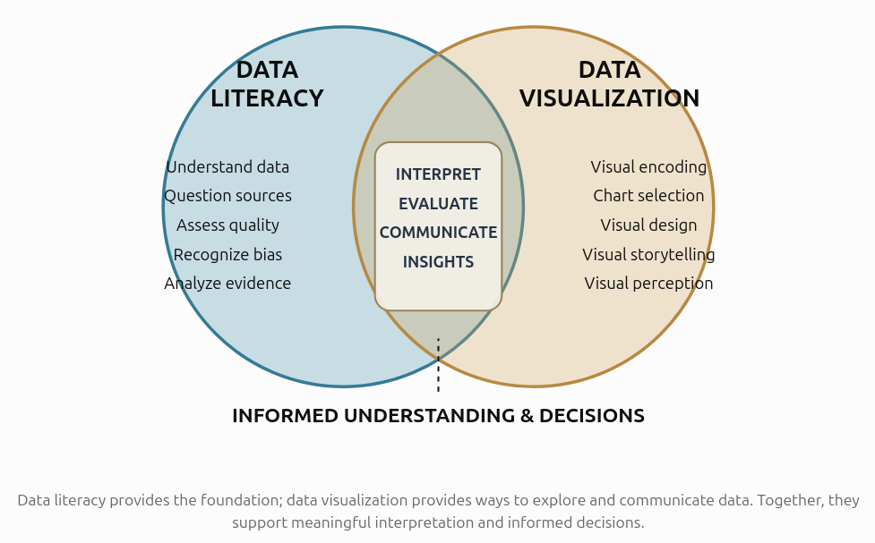
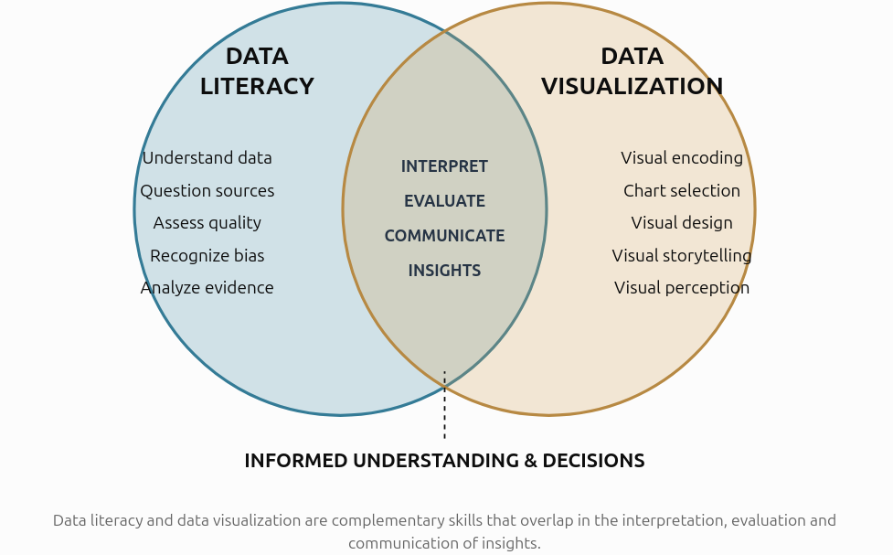
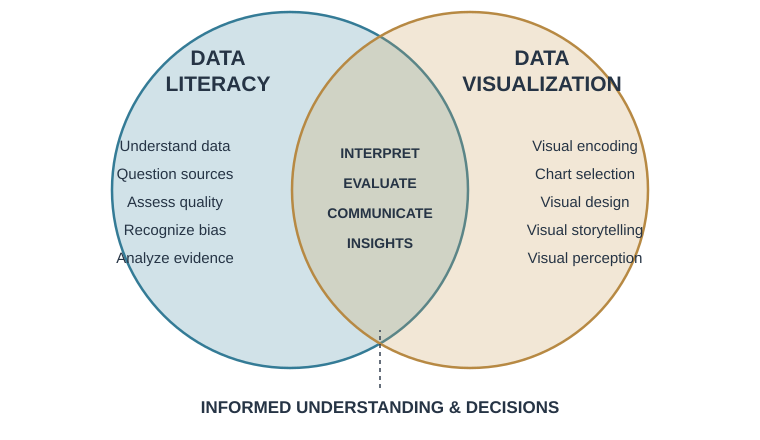
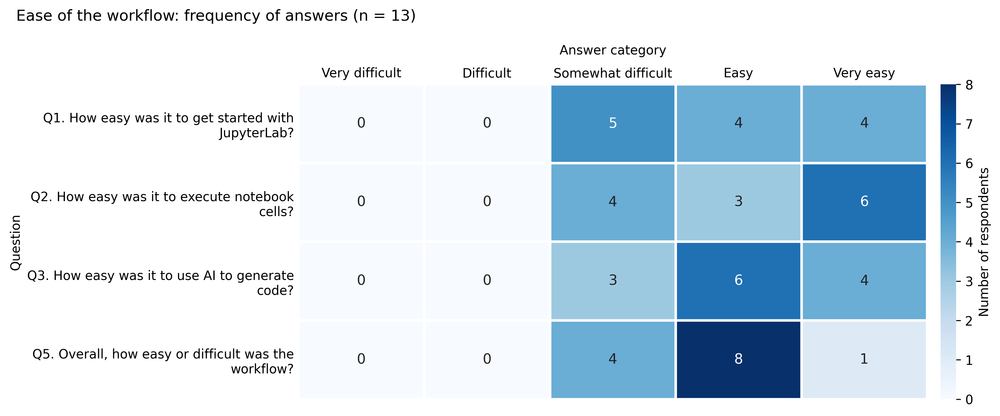

Main restrictions
- Communication
- Legal
- Cost
A PhD students case study
7th International Conference on Artificial Intelligence and Data Science (2026) — UNCA
2026-11-13
Data visualization is the graphical representation of quantitative and qualitative information.
But why do we visualize data?
Explore: Discover patterns, trends, and relationships.
Validate: Assess assumptions and the validity of a model.
Communicate: Explain findings and support decision-making.
Understand: Make complex information accessible.
Anscombe’s quartet: same statistics, different data
Simple in theory …
When the targeted users can easily accomplish what they want using the visualization
In practice, complicated …
- Can the audience identify the main message?
- Is the level of detail appropriate?
- Is the visual representation appropriate for the data?
- How much cognitive effort is required?
- Does the visualization support the intended task?


Sometimes you don’t have the vocabulary to describe what you envision.
You might imagine:
But you might not know the terminology required to describe it.
To ask the right question is already half the solution of a problem.
— Carl Jung (attributed)

Fix the text to fit inside the circle.

Part of the text is still outside the circle. Fix it and provide the code.

Key takeaway: learn the fundamentals.
Teaching practical data visualization for PhD students
Consider that students have different:
Assume that they do not have programming skills
Metadata about the data
rows, columnsMain goal of the visualization
# ▶️ RUN — explore the dataset
print("First 5 rows:")
display(df.head())
print("\nRows and columns:", df.shape)
print("\nColumn names:", df.columns.tolist())
print("\nData types and non-null counts:")
df.info()
print("\nSummary statistics:")
display(df.describe(include="all").T)
print("\nMissing values per column:")
display(df.isna().sum().to_frame("missing_values"))
Given my research question/goal "[YOUR RESEARCH QUESTION/GOAL]"
and my dataframe "df" with the following structure
[PASTE HERE the output of the exploration cell in section 3]
propose the minimum data-preparation steps and provide the python code.
Explain why each step is needed. Do not remove or alter observations without explaining the consequences.🟦 COPY → AI (edit, then copy this whole cell and paste it into your AI chat)
Given my research question "[YOUR RESEARCH QUESTION]"
and my prepared dataframe 'data' with the following checks and structure
"""
[PASTE HERE the output of the preparation cell in section 4]
"""
Recommend suitable chart types for this research question and these variables.
Compare their strengths and limitations.
Consider the measurement scales and whether the data are ordered, categorical, or continuous.
Do not create the chart yet.🟦 COPY → AI (edit, then copy this whole cell and paste it into your AI chat)
Write Python code for the [CHOSEN CHART TYPE].
Use my existing dataframe named `data` and these exact columns: [COLUMN NAMES].
Include a descriptive title, axis labels with units, and an appropriate legend if needed.
Explain the code and flag assumptions.Task 1
Task 2
Task 3

If AI handles more of the coding, should we spend less time learning?
In fact, the opposite may be true.
Important
Understanding design principles becomes more important, not less, because these principles enable us to supervise AI effectively and challenge inefective outputs.
The future belongs not to those who can generate the most answers, but to those who know how to ask the right questions.